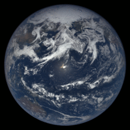
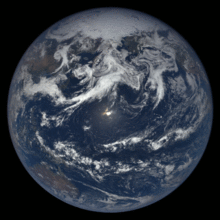

EARTH
 

Earth is the third planet from the Sun and the only astronomical object known to harbor life. According to radiometric dating and other sources of evidence, Earth formed over 4.5 billion years ago. Earth's gravity interacts with other objects in space, especially the Sun and the Moon, which is Earth's only natural satellite. Earth orbits around the Sun in 365.256 days, a period known as an Earth sidereal year. During this time, Earth rotates about its axis about 366.256 times.[n 6]
Earth's axis of rotation is tilted with respect to its orbital plane, producing seasons on Earth. The gravitational interaction between Earth and the Moon causes tides, stabilizes Earth's orientation on its axis, and gradually slows its rotation. Earth is the densest planet in the Solar System and the largest and most massive of the four rocky planets.
Earth's lithosphere is divided into several rigid tectonic plates that migrate across the surface over many millions of years. About 71% of Earth's surface is covered with water, mostly by oceans. The remaining 29% is land consisting of continents and islands that together contain many lakes, rivers and other sources of water that contribute to the hydrosphere. The majority of Earth's polar regions are covered in ice, including the Antarctic ice sheet and the sea ice of the Arctic ice pack. Earth's interior remains active with a solid iron inner core, a liquid outer core that generates Earth's magnetic field and a convecting mantle that drives plate tectonics.
Within the first billion years of Earth's history, life appeared in the oceans and began to affect Earth's atmosphere and surface, leading to the proliferation of anaerobic and, later, aerobic organisms. Some geological evidence indicates that life may have arisen as early as 4.1 billion years ago. Since then, the combination of Earth's distance from the Sun, physical properties and geological history have allowed life to evolve and thrive. In the history of life on Earth, biodiversity has gone through long periods of expansion, occasionally punctuated by mass extinction events. Over 99% of all species that ever lived on Earth are extinct. Estimates of the number of species on Earth today vary widely; most species have not been described. Over 7.7 billion humans live on Earth and depend on its biosphere and natural resources for their survival. Humans have developed diverse societies and cultures; politically, the world has around 200 sovereign states.